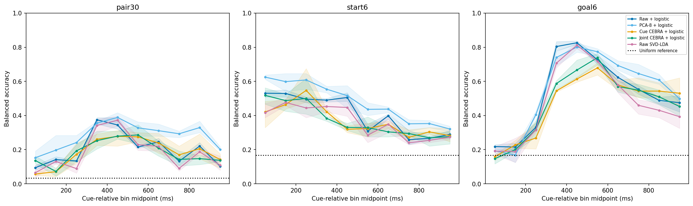
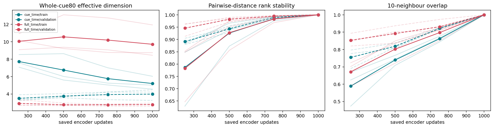
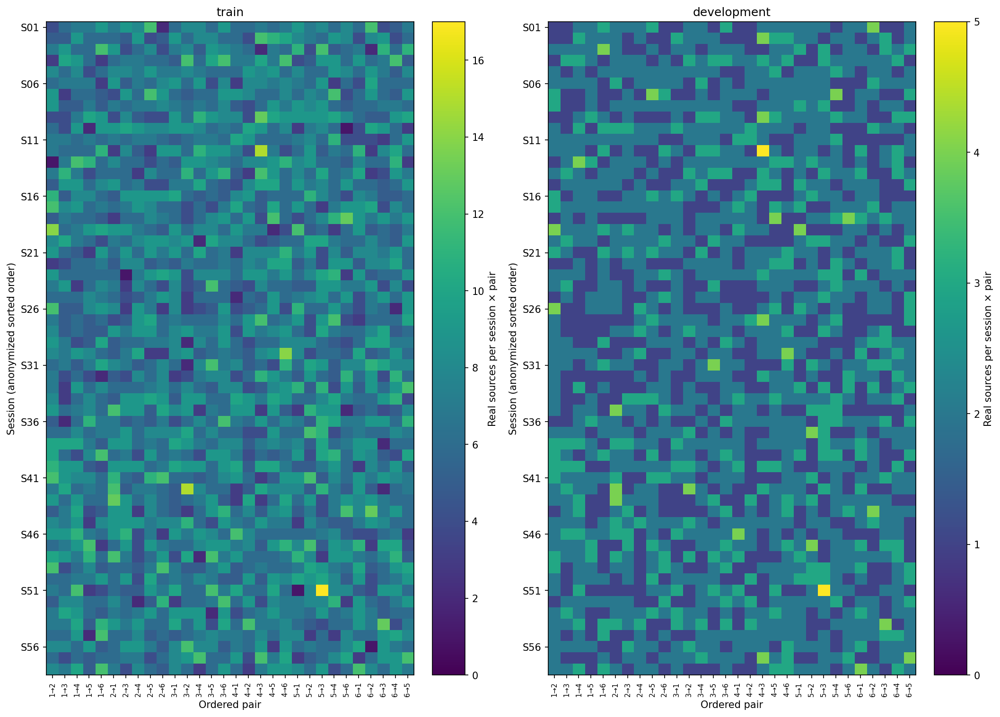
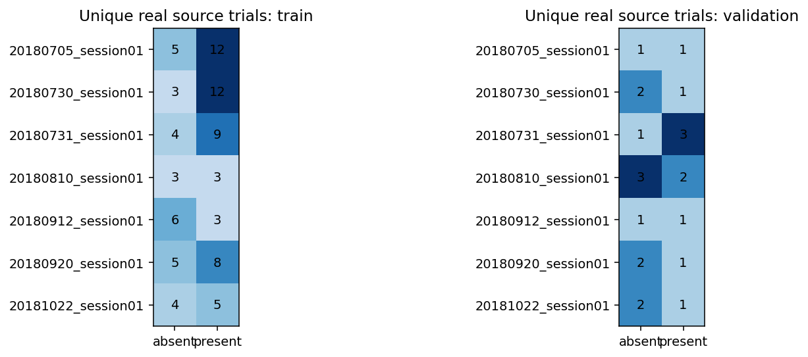
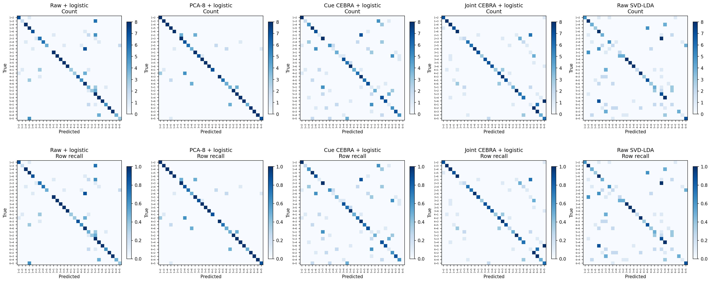
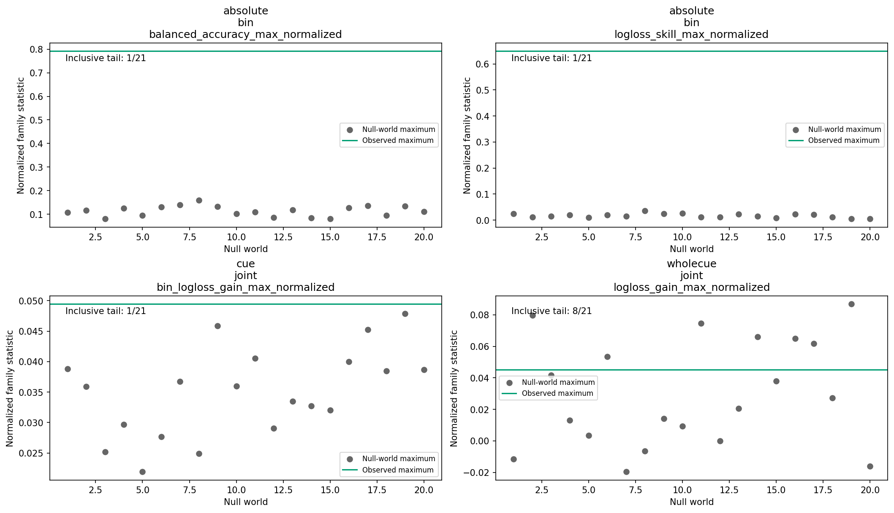

Research manuscript · working draft 03 · 12 October 2026
Decoding navigation-related information from hippocampal activity with CEBRA-Time
Endpoint recovery, path-component decoding, and comparison with simpler representations
CEBRA-Time-focused working manuscript based on completed exploratory studies, with raw/PCA/LDA references. Experimental metadata requiring laboratory confirmation are identified explicitly.
Abstract
Low-dimensional representations of neural activity may make behaviorally relevant information accessible to simple readouts. We evaluated CEBRA-Time representations of hippocampal cue-period activity in a series of exploratory navigation analyses, comparing them with raw spike-count features and principal component analysis (PCA). Label-conditioned pseudopopulations supported decoding of start, goal and ordered start–goal conditions. In the latest matched endpoint comparison, whole-cue pair balanced accuracy was 83.61% for PCA, 75.56% for jointly trained cue/navigation CEBRA, 70.28% for raw features and 63.75% for cue-only CEBRA. Joint CEBRA had slightly lower pair probability loss than PCA, demonstrating a metric-dependent ranking. Separate path-component studies exposed a large gap between transfer to new mixtures of familiar source trials and transfer to different sources. Nonlinear readouts and broader regularization searches did not rescue the tested frozen CEBRA path representations. Broader encoder training and individual cue windows produced descriptive improvements, but absolute-performance and shuffled-label controls did not establish robust path information beyond endpoints. Projection and checkpoint diagnostics further separated display geometry from predictive utility. These findings support conditional task-information recovery in the constructed populations, rather than general CEBRA superiority, validated full-route prediction or recovery of trial-specific hippocampal states.
Keywords: hippocampus; navigation; CEBRA; neural representation; pseudopopulation; decoding
1. Introduction
Spatially selective hippocampal firing has long motivated the study of neural representations of navigation [1]. However, identifying a location or destination is not equivalent to identifying the movement required to reach it. Multiple paths may connect the same start and goal. A decoder that distinguishes endpoint conditions therefore need not contain information about which of those paths will subsequently be taken.
The original question motivating these analyses was whether hippocampal activity during a pre-navigation cue period contains path information beyond start and goal, and whether that information has reproducible low-dimensional organization. These are distinct requirements. Reliable decoding can establish predictive utility under a specified evaluation distribution without identifying a unique latent geometry. Conversely, a structured low-dimensional projection need not contain information useful for the prediction of interest. Dimensionality reduction provides a description of recorded population variation; its biological interpretation depends on the measurements, task and validation [2].
This manuscript focuses on CEBRA-Time, which learns neural embeddings through temporally defined contrastive relationships [3]. Cue-only and joint cue/navigation training denote different input coverage under that same objective. A simple downstream classifier separates representation learning from readout complexity. Unless otherwise specified, CEBRA below refers to this Time objective. A low output dimension does not itself guarantee useful decoding; raw features, PCA and LDA remain important references.
The available recordings posed an additional constraint. The selected units were distributed across sessions rather than supplied as a verified simultaneous population. We therefore used condition-matched pseudopopulations: artificial feature vectors assembled from source-trial blocks with known task labels. This construction can support a condition-level information assay under explicit assumptions, but it changes the prediction problem. It does not reproduce the missing joint activity of all units on a single natural trial.
Here, we synthesize the completed endpoint and path-component analyses around three questions. First, what task information was recoverable from cue-period activity? Second, which performance differences could be observed across source constructions, temporal resolution, training coverage and readout choices within the tested comparisons? Third, what additional information did latent-space diagnostics provide? The studies form a sequence of bounded exploratory experiments with different targets and source populations. Their results are interpreted within those designs, not as a pooled model leaderboard or independent replications.
2. Materials and methods
2.1. Recordings, task labels and behavioral targets
The source archive contains 195 place-selected sorted units across 58 sessions, with spike timestamps, Ripple task markers, Eyelink records and native Unity behavioral logs. The processing code describes a first-person virtual maze with four internal pillars and six visual landmarks. A prior analysis write-up describes six start/goal posters, a nominal one-second cue and navigation following cue offset; successive trials begin at the preceding trial's goal. These task descriptions are documented context rather than newly verified experimental metadata.
Operational endpoint labels were assigned from marker transitions: the
preceding successful trial's minor marker digit supplied “start,” and
the current trial's digit supplied “goal.” The marker families
distinguish trial start/cue (1x), cue offset/navigation
onset (2x), successful completion (3x) and
timeout (4x). Unequal endpoint categories give 30 ordered
pairs. The precise mapping between these categories and laboratory
task instructions remains provisional. Species, animal count and
demographics, electrode specifications, detailed sorting/selection
criteria, anatomical localization and ethics-protocol information were
not established by the documentation available for this synthesis;
they cannot be inferred from session counts or directory names.
Dataset documentation and the
prior-write-up summary
distinguish these evidence levels.
Path measurement was defined independently of neural decoding. The
accepted geometry divides the broad floor into nine node/plaza regions
and twelve corridors, giving 24 directed corridor components (Figure
1). The first primary neural contrast concerned traversal from the
upper-right to middle-right node, D_N_R_T__N_R_M, within
endpoint pair 4→3. “Present” means that the directed component occurs
among interior corridor runs after excluding the first and last runs.
“Absent” does not mean absent everywhere along the route: a traversal
confined to an excluded run does not make the interior target
positive. A separate five-endpoint study used the supported
central-middle→central-bottom component, D_N_C_M__N_C_B.
Neither target is a reconstruction of the complete ordered path.
2.2. From recorded trials to sampled pseudopopulations
Figure 2 follows the construction from real recordings to four prediction targets using two constructions. Neurons are feature channels, not examples. The measurements are real; their cross-session combination is synthetic. Source counts, constructed rows and reuse therefore require separate accounting.
A · One trial from each session supplies all its selected neurons
B · Four prediction tasks from two constructions
Real recordings and source eligibility
In the endpoint study, current and immediately preceding trials had to be successful, sequential, in the same session and original training partition, and free of importer QC flags. The current Ripple cue duration had to lie in [1.0, 1.5] s. Of 16,859 original-training trials, 15,553 met eligibility: 12,288 were assigned to inner training and 3,265 to development using a frozen session-and-condition-stratified split. The preceding trial supplied a label but no neural input. Endpoint sources therefore supported ten fully observed, half-open 100-ms intervals covering [0, 1) s from current cue onset.
| Assay | Units / sessions | Real sources: training / development | Constructed evaluation object |
|---|---|---|---|
| Endpoint condition | 195 / 58 | 12,288 / 3,265 | 480 training / 240 development rows per seed; 30 pair-balanced classes |
| Fixed 4→3 interior component | 29 / 7 | 82 / 22 | Later exact evaluation: 24 absent + six present combinations, half the weight per class |
| Five-endpoint component panels | 49 / 13 | 147 / 41 | Endpoint-specific panels and exact products; 17/28 development session×class pools are singletons |
The populations overlap within the selected-unit archive and are not independent biological replications. Earlier fixed-endpoint studies sampled development rows rather than enumerating the later exact product. Panel eligibility in the path programme included historical development support; it was not pristine training-only cohort discovery. Per-unit analyses used separate target-specific source sets. Source/class distributions are shown in Figures S2 and S3.
Assembly retains intact observed session blocks (Figure 2A); missing neurons are never filled with zero. Same-session membership alone does not verify acquisition simultaneity. The earlier five-endpoint panel assay in Table 1 is historical context, not another construction for the four latest targets.
Class balance and the four prediction targets
Endpoint trials are sampled with replacement within session, split and ordered-pair pools. Sixteen rows for each of 30 unequal ordered pairs give 480 training examples; eight per pair give 240 development examples. The start and goal classifiers use these same examples with different labels, not separately resampled populations (Table 1a). Each start occurs with five goals, so 5 × 16 = 80 training rows and 5 × 8 = 40 development rows have that start. The same argument applies to each goal. Thus all three constructed endpoint targets are exactly class-balanced, even though the underlying real-source pools need not be.
| Prediction target | Classes | Training rows per class | Development rows per class |
|---|---|---|---|
| Ordered start–goal pair | 30 unequal ordered pairs | 16 | 8 |
| Start alone | Six starts | 80 | 40 |
| Goal alone | Six goals | 80 | 40 |
| Interior component within fixed 4→3 | Absent / present | 64 / 64 | 24 / 6 |
The first three rows describe one shared 480/240 construction, not three independent datasets. The latest endpoint study trains separate readouts; earlier pair-marginal scores are different. Sources: endpoint assembly protocol and path source audit.
Path training uses 64 sampled rows per class. Development instead enumerates every within-class combination of the seven session pools: 24 absent combinations and six present combinations. These rows have a 4:1 count ratio, but balanced scoring gives each class half the total weight. An always-absent predictor would have 80% unweighted accuracy and only 50% balanced accuracy. The real-source counts are different again: 30 absent/52 present training trials and 12 absent/ten present development trials. Equal synthetic class counts or scoring weights do not imply equally rich source support.
Endpoint start/goal recovery therefore cannot be attributed simply to giving one constructed class more examples. Start and goal each have six classes with identical marginal counts; any accuracy difference requires another explanation. Both have more examples per class than the 30-way pair problem, and six-way chance accuracy is 1/6 rather than 1/30. Task difficulty, neural discriminability and uneven session×condition source support may also matter, but their separate contributions were not identified here. Existing real-source distributions appear in Figures S2–S3; separate real-source start and goal marginal plots remain to be added, rather than assuming those source distributions are uniform.
Computational repeats and underlying trial reuse
A seed controls the random choices in one computational repeat, such as which eligible trials are selected and the model initialization. Each endpoint repeat has 480 training and 240 development examples, drawn from the same fixed real-source split. The three seeds do not represent three newly recorded populations. Consequently, their example counts are not added when describing biological sample size. The synthetic training:development ratio is 2:1; the eligible real-source ratio is 12,288:3,265 (approximately 3.76:1).
One source selection means choosing one real trial to supply one session block in one synthetic row. It is not one neuron or one bin. Thus 480 endpoint training rows require 480 × 58 = 27,840 selections, but those selections reuse only 10,875–10,906 distinct training trials across the three saved assemblies. Table 1b separates available sources, actual use and repeated selection.
| Quantity | Endpoint study | Fixed-component study |
|---|---|---|
| Real trials supplying one synthetic row | 58: one per session | Seven: one per session |
| Eligible real sources, training / development | 12,288 / 3,265 | 82 / 22 |
| Synthetic rows, training / development | 480 / 240 | 128 / 30 |
| Training source selections | 480 × 58 = 27,840 | 128 × 7 = 896 |
| Distinct training sources actually used | 10,875–10,906 | 82 |
| Selections per used training source | 2.55–2.56 on average | 10.93 on average |
| Development source selections | 240 × 58 = 13,920 | 30 × 7 = 210 |
| Distinct development sources actually used | 3,208–3,223 | 22 |
| Selections per used development source | 4.32–4.34 on average | 9.55 on average |
| Raw cue measurements in each synthetic row | 195 neurons × ten bins | 29 neurons × ten bins |
Endpoint distinct-use ranges describe the three saved assemblies documented in the endpoint source audit and reused by the latest endpoint study. Path distinct-use counts are documented for observed seed zero in the path lineage audit. Average reuse is selections divided by distinct sources used, not divided by all eligible sources. These averages hide unequal reuse; they are not confidence intervals or effective sample sizes.
All derivatives of a source remain in its original split, preventing that source from contributing to both fitting and evaluation. Within a split, however, synthetic rows can share trials. Repeating their assembly does not create independent recordings or recover the missing cross-session covariance. Because the true condition selects source blocks, the assay measures separability in a known-label construction, not end-to-end prediction of one unknown-label natural trial. The recorded source trials and sessions, not neuron channels, synthetic rows or seeds, constrain the independent evidence.
2.3. Representations, encoder training and readouts
Figure 2C contrasts selecting one time bin with concatenating the whole cue, before or after dimensionality reduction. Each route preserves the example count; Table 1c gives the complete matrix sizes.
C · Change the feature view, not the number of examples
| Feature view | Endpoint: training / development | Fixed component: training / development |
|---|---|---|
| Raw, one selected 100-ms bin | 480 × 195 / 240 × 195 | 128 × 29 / 30 × 29 |
| Raw, ten-bin whole cue | 480 × 1,950 / 240 × 1,950 | 128 × 290 / 30 × 290 |
| PCA8 or CEBRA8, one selected bin | 480 × 8 / 240 × 8 | 128 × 8 / 30 × 8 |
| PCA8 or CEBRA8, ten-bin whole cue | 480 × 80 / 240 × 80 | 128 × 80 / 30 × 80 |
Before the feature view, raw synthetic arrays are row × neuron × bin: endpoint training/development shapes are 480 × 195 × 10 and 240 × 195 × 10; path shapes are 128 × 29 × 10 and 30 × 29 × 10. These are assembled populations, not simultaneous measurements from 480 or 128 natural trials. In the path implementation, raw whole-cue flattening is cell-major, while PCA/CEBRA flattening is bin-major; preserving the declared order is necessary to select the intended bin. Sources: path feature-order contract and endpoint readout protocol.
Representation fitting
Raw inputs were spike-count features or study-specific rate summaries. PCA fitted one shared basis to pooled training-bin vectors, not a separate basis at each time bin. Pooling bins for representation fitting changes the computational input arrangement, not the number of independent recorded trials.
The reused CEBRA encoders were pointwise
offset1 networks: one bin's population vector entered a
nonlinear mapping with hidden widths 32, 32 and 16, followed by eight
unit-normalized outputs. The path architecture was 29→32→32→16→8; the
historical endpoint adaptation used 195 input channels. There was no
recurrent hidden state. Temporal structure entered through the
contrastive sampling policy. CEBRA-Time positives were adjacent bins
from the same synthetic trial or the declared native-bin pair
construction. Temporal pairing did not make the entire procedure
target-free: the input assembly still used known task conditions, and
downstream readouts were supervised.
Historical recipes differed in temperature, learning rate, duration and sampling policy; these are not silently equated. The initial endpoint baseline used 1,000 updates, temperature 1, batch size 256 and learning rate 0.001. The retained crossed-seed path family used temperature 1, batch 256, learning rate 3×10−4 and 1,000 updates. The later cue-versus-broader path experiment paired initialization and held architecture and total updates fixed, with cue-only and broader CEBRA-Time arms considered here. Broader training sampled cue and training-source navigation equally. Complete native 100-ms navigation bins were used; partial tails were excluded. Relative-duration matching across session blocks did not create a physical continuous pseudotrajectory or align identical maze positions.
The October endpoint follow-up compared cue-only with 50/50 cue/navigation CEBRA-Time at a fixed 1,000 updates. Only the 12,288 inner-training sources supplied navigation. The intervention reallocates a fixed contrastive budget: it changes navigation exposure and the number of cue samples, so it does not isolate navigation content from cue-exposure changes. Input scaling was fitted on training cue data, and all downstream fits and predictions used cue activity only. Joint training is not navigation-time decoding or frozen cross-phase transfer.
The latest endpoint comparison used separate pair30, start6 and goal6 logistic heads with training-only scaling, C = 0.01 and at most 2,000 solver iterations. Raw SVD-LDA was a supervised, non-dimension-matched reference. Earlier start/goal scores sometimes came from marginals of a predicted pair rather than independent heads. Path readout comparisons included scaled/unscaled logistic regression, cosine k-nearest neighbors and radial-basis-function SVMs. The regularization diagnosis varied logistic C from 0.001 to 100 and SVM C and bandwidth independently. SVM margins were not converted into fabricated probabilities.
In the separate five-endpoint study, a training-source cross-validation procedure selected among rate transformations, temporal pooling, scaling and bounded L2 settings. The matched PCA extension compared raw rates with training-only PCA at the same tuning budget and 90% training-variance retention rule. Its dimensions, cohorts and regularization objective differ from the fixed 4→3 PCA8/SVM comparisons. Equality of latent dimension or of a numerical regularization parameter does not make the study families capacity-matched.
2.4. Evaluation, controls and reproducibility
Balanced accuracy (BA) averages class recall; logarithmic loss measures probability quality and penalizes confident errors. Chance-reference BA is 1/30 for ordered pair, 1/6 for start or goal, and 1/2 for binary components. Uniform-prediction losses are log(30), log(6) and log(2), respectively. Loss improvement is reported with its reference stated explicitly; a positive gain over a poor model does not necessarily beat constant prediction. AUROC measures ranking rather than a particular classification threshold. No development-selected threshold inversion was used to turn below-chance results into successful predictions.
Constructed rows, neighboring bins and computational seeds are dependent observations. The original source trial nested within session constrains the evidence. Three-seed means and ranges describe construction/optimization sensitivity, not biological confidence intervals. The frozen decoder study used five assembly seeds crossed with five optimizer seeds for CEBRA-Time, whereas its raw/PCA controls had only the five assemblies. The five optimizer fits were averaged within assembly for paired comparisons; they were not treated as additional recorded populations.
Source-coherent nulls permuted labels before conditional assembly and repeated the specified fitting procedure. October comparisons retained 20 null worlds, giving a minimum inclusive plus-one tail fraction of 1/21. Seed averaging preceded the predefined maxima across targets, windows or methods. The five-endpoint study instead used 100 ordinary and 100 temporal-half worlds, repeating selection within each null. These references ask whether a declared statistic is unusual under a specific no-association construction; they are not interchangeable tests of method superiority. Historical exposure, serial exchangeability and nuisance structure remain unresolved. Small sample support cannot be repaired merely by reporting variability across repeated fitting runs [4].
Fixed-model source reweighting or deletion traced every real source through all constructed rows using it. A deletion that eliminated class support was recorded as inestimable rather than a robust success. These ranges are finite-pool sensitivities, not animal-level intervals. Accepted studies retained source/configuration hashes, failed attempts, model and preprocessing states, metric tables and forward-replay receipts. Computational replay established reproducibility of the stored pipeline; it did not independently verify laboratory metadata or biological generalization. This manuscript reuses published-within-repository aggregates and rendered figures without recomputing models or accessing raw recordings.
3. Results
3.1. Endpoint conditions were recoverable, with target- and metric-dependent method rankings
The initial endpoint baseline established recoverable condition information but did not favor its fixed CEBRA configuration. With the original logistic C = 1 readout, pair accuracy was 54.86% for one-second raw totals, 71.39% for ten-bin raw counts and 82.50% for PCA8/bin, compared with 42.78% for CEBRA-Time. These methods exceeded their corresponding 20 source-shuffle means, but those low-resolution references did not make the exposed development pool confirmatory. Readout regularization changed the frozen Time score (§3.3).
The latest matched endpoint comparison used the same source assemblies for all three direct heads. PCA achieved the highest whole-cue pair and start BA, while raw features achieved the highest goal BA (Table 2; Figure 3). Joint cue/navigation CEBRA increased pair BA by 11.81 percentage points relative to cue-only training, but the start and goal changes were +0.83 and −1.25 points. Across seeds, pair BA was 57.92/71.25/62.08% for cue-only CEBRA and 70.42/77.92/78.33% for joint CEBRA. These paired changes were not uniform across targets.
| Representation/readout | Pair BA | Start BA | Goal BA | Pair log loss ↓ |
|---|---|---|---|---|
| Raw + logistic | 70.28% | 78.75% | 90.83% | 2.1701 |
| PCA8/bin + logistic | 83.61% | 89.44% | 86.81% | 1.6736 |
| Cue-only CEBRA-Time + logistic | 63.75% | 71.81% | 85.14% | 1.7795 |
| Joint CEBRA-Time + logistic | 75.56% | 72.64% | 83.89% | 1.6373 |
| Raw SVD-LDA | 48.47% | 57.22% | 80.97% | 3.7206 |
195 units/58 sessions; source and row counts in Table 1. Logistic C = 0.01, first-second concatenation; PCA/CEBRA provide 80 features. Direct heads are not earlier pair-derived marginals. Source: October seed-level aggregate.
A · Balanced accuracy

B · Logarithmic loss

Accuracy and probability loss did not select the same method. Joint CEBRA had slightly lower pair loss than PCA (1.6373 versus 1.6736), despite lower pair BA (75.56% versus 83.61%). The whole-cue joint-loss-gain family tail was 8/21. The bin-wise absolute-accuracy, loss-skill and joint-gain families reached 1/21, the finest possible resolution with 20 worlds, but these findings neither validate a chosen time window nor establish general joint-training superiority. All-bin curves are shown in Figure 4, and family controls in Figure S5.

Count and row-normalized confusion matrices show class-specific errors rather than only headline means (Figure S4). Source deletion also exposed finite support: for the pair target, 571–579 deletions per seed were inestimable because removing all rows using a source eliminated a class. These failures remain part of the evidence rather than being omitted from a robustness summary.
3.2. Path-component decoding was sensitive to source population and cue window
Whole-cue performance measured one component, not an ordered route
The latest matched path comparison asked a binary question: within
fixed start 4 and goal 3, did the observed navigation path contain
directed component D_N_R_T__N_R_M among its interior
corridor runs, after removing the first and last runs? The model
received cue activity, not the later navigation activity at prediction
time.
No complete ordered route was predicted or scored.
Table 3 gives all whole-cue results for this comparison; these are
development scores on condition-built pseudopopulations, not accuracy
on previously unknown natural trials.
| Representation | Logistic | RBF-SVM |
|---|---|---|
| Raw neural | 46.53% | 30.56% |
| PCA8 | 22.22% | 55.56% |
| Cue-only CEBRA-Time | 32.64% | 40.28% |
| Joint cue/navigation CEBRA-Time | 61.81% | 50.69% |
Means over three paired computational seeds, not biological replicates or confidence intervals. Same 29-unit/seven-session cohort, 82 training and 22 exposed-development real sources; 128 training rows (64/class) and 30 exact development combinations (24 absent, six present), with equal total evaluation weight per class. Ten cue bins supply 290 raw or 80 PCA/CEBRA features. Fixed logistic C=.01; RBF-SVM C=1, gamma=scale; frozen 1,000-update encoders. Navigation contributes only to joint encoder training. October whole-cue results replay the prior experiment; they are not new replication. Source: all saved mean/seed scores.
Missed positives and false positives explain the low balanced accuracy
The cue-only Time/logistic readout predicted “absent” for 19/30, 30/30 and 16/30 combinations in seeds 0, 1 and 2, respectively. It detected zero of six present examples in every seed. Seeds 0 and 2 additionally called 11 and 14 absent examples “present” (Figure 5A). Thus “mostly absent” is accurate but incomplete: the false positives, together with zero positive recall, pushed mean balanced accuracy below 50%.
The development combinations are imbalanced, but balanced accuracy gives absent and present equal weight; training rows were already balanced at 64 per class. Always saying “absent” would score 50% BA, not 32.64% (Figure 5B). Joint training partly restored detection, with six, zero and two of six positives detected across the three seeds. Its 61.81% mean therefore hides substantial computational variation, and does not establish reliable transfer.
These observations do not uniquely diagnose why the mapping failed. Limited real-source support and source reuse are documented constraints; a mismatch between learned features and the target, source-distribution differences and readout behavior remain possible contributors. The earlier source-transfer and decoder studies below probe parts of that problem, but are not the same fitted comparison as Table 3. Neither the confusion matrices nor a below-50% score establish absence of hippocampal path information. Reversing predictions after inspecting development labels would be a new selected rule, not a validated rescue.
Behavioral measurement did not determine neural sample size
The initial mapping covered 19,162 eligible behavioral trials, but the primary common neural panel contained only 29 units across seven sessions. Its sources comprised 52 component-present and 30 absent training trials, and ten present and twelve absent development trials. Requiring at least two development sources per label reduced the panel to six units in one session; a stronger 5-training/2-development requirement was infeasible. The large behavioral inventory therefore did not imply large independent neural support.
In the early sampled whole-cue comparison, raw total and ten-bin features achieved mean BA of 45.3% and 47.4%; PCA3 and PCA8 achieved 52.1% and 45.3%. PCA3 ranged from 25.8% to 78.9% across assembly seeds. A subsequently inspected 200–300-ms raw bin reached 100% BA, but its maximum-over-ten-bin reference was 22/101. V9 CEBRA-Time8 whole-cue mean BA was 44.27%. These observations motivated source and temporal diagnostics rather than establishing a successful whole-path predictor.
Synthetic recombination was not source generalization
Exact enumeration separated assembly randomness from finite-source support. Track A evaluated all 24 absent and six present development combinations with equal mass per class. Increasing synthetic training rows reduced assembly variation, while the moment-based ridge reference stabilized around 47.9% BA. The 290-feature development matrix had rank nine under that construction; this was a property of the empirical source product, not a measurement of brain-intrinsic dimension.
Track B found a much larger contrast between source pools. CEBRA-Time transferred to new mixtures of the same training sources at 99.25% BA, but achieved only 24.92% on the other source pool. Synthetic recombination success therefore did not establish source transfer, and the gap did not identify its unique biological or algorithmic cause. The archived broader search and its correction ledger are retained as provenance, not reinterpreted here as a new Time-only statistical test. Corrected inference authority.
Track C tested actual per-unit trial inputs with endpoint, trial-index and cue-duration controls. It considered the original interior component, its anywhere-in-route counterpart and a more supported interior target. Ordinary and temporal three-target family references were approximately 0.475 and 0.436; the analyses did not establish incremental cue-rate evidence. This was a complementary lane, not a test of simultaneous population dynamics or a requirement that every informative population contain individually significant cells.
Preprocessing and matched PCA provided small, heterogeneous probability gains
The separate five-endpoint study compared 20 recipes varying time pooling, rate transformation, feature scaling and regularization. Training-source cross-validation favored first-second raw rates with a variance floor and stronger regularization. The selected historical diagnostic had mean baseline-relative loss improvement +0.02858 nats and 55% BA, but only two of five endpoint panels improved over constant prediction. Removing 6→1 reversed the mean improvement to −0.03787 nats. The four declared ordinary/temporal selection-null comparisons ranged from 0.139 to 0.356.
A subsequent matched PCA/raw comparison held the source panels, inputs and tuning budget fixed. PCA reduced mean loss from 0.664564 to 0.657541 nats, a paired gain of 0.007023, while both methods remained at 55% BA. The fixed-selection source-resampling range extended from −0.011444 to +0.023426 nats. These are sensitivity percentiles, not a superiority interval. The largest PCA-over-raw improvement occurred at 5→1, where both methods still lost to constant prediction; the aggregate baseline-relative success remained driven by 6→1. This study is not a validation of the separate fixed-4→3 PCA/SVM result.
Broader encoder training improved a relative score but failed the primary absolute criterion
At a matched 1,000-update budget, broader cue/navigation training improved Time's cue-only logistic loss from 1.010464 to 0.710618 nats and BA from 32.64% to 61.81%. Time's loss gain was positive in all three seeds, but broader-Time BA was 79.17%, 43.75% and 62.50%, and only one seed had AUROC above 0.5. The primary criterion failed because mean loss remained above constant prediction, log(2) = 0.693147.
The distinction between relative and absolute performance was also present in the controls. The Time paired-gain tail was 1/21, but its absolute broader-training loss tail was 12/21. Improvement over a poor cue-only model was therefore not equivalent to established path association. Eight of 22 source deletions were inestimable. Navigation entered encoder training only; no navigation-time prediction or frozen cue↔navigation transfer was demonstrated. Matched Time-arm results.
Single-window peaks did not identify a validated prediction time
The October window assay reused these encoders and PCA transforms, fitted single-bin readouts and replayed the prior whole-cue results. Joint-Time/logistic reached a descriptive 88.89% BA at 100–200 ms, compared with 61.81% for whole cue; raw/logistic reached 94.44% at 200–300 ms (Figure 6). The whole-cue replay is not a new replication. Window-specific fitting also does not test whether one fixed readout transfers between times.

Sixteen of 20 source-label-shuffled worlds had a maximum across the same 80 views at least as high as the observed 94.44%, giving an inclusive tail of 17/21. The predeclared maximum joint-training logistic gain had tail 9/21 (Figure 7). These controls prevent the inspected peaks from establishing robust path information or a reliable optimal cue window.

3.3. Readout and regularization diagnostics constrained explanations for performance differences
Holding the endpoint Time representation fixed, changing the logistic readout from C = 1 to 0.01 increased pair accuracy from 42.78% to 51.67%. Separately, the historical Time checkpoint study with a common C = 0.01 readout found 69.72%, 51.67% and 38.06% development accuracy at 250, 1,000 and 3,000 encoder updates. This inspected trajectory did not validate an early-stopping rule and is not the latest fixed-1,000-update cue/joint comparison. Frozen-readout diagnosis; historical Time checkpoints.
| Population / representation | Readout change | Development accuracy / BA | Scope |
|---|---|---|---|
| Endpoint / Time | Logistic C: 1 → 0.01 | 42.78 → 51.67% | Three seeds; pair-balanced accuracy equals BA |
| Fixed 4→3 / Time | Scaled logistic C=1 → scaled RBF-SVM | 24.92 → 37.33% | Five assemblies × five optimizer seeds |
| Fixed 4→3 / PCA | Matched logistic → scaled RBF-SVM | 42.92 → 77.50% | Five assemblies; not a CEBRA rescue |
| Fixed 4→3 / Time | Logistic C: 0.001 → 100 | 30.92 → 24.25% | Weaker penalty did not restore transfer |
Endpoint and path populations remain separate (Table 1). Path means use the 29-unit/seven-session population, 82/22 real sources, 128 training rows and 24 absent/six present development combinations with equal class weight. Whole-cue Time/PCA readouts have 80 features. Computational repeats are not biological replication. Sources: endpoint diagnosis, fixed readout study, penalty diagnosis.
Nonlinear path readouts did not rescue the retained Time representation
Eight fixed readouts were evaluated on the retained Time path representations. Scaled RBF-SVM reached 37.33% mean BA and 0.141 AUROC, compared with 24.92% and 0.111 for archived scaled logistic regression. No tested Time recipe met the declared BA/AUROC/five-point-gain follow-up criterion. Training classes were nearly perfectly separable; the failure concerned transfer, not training-label fit.
PCA with scaled RBF-SVM reached 77.50% BA and 0.829 AUROC, versus 42.92% BA for its matched logistic readout. This was a lead for a different representation, not established robust path signal: that experiment lacked a matched PCA null. Later raw/PCA controls had family tail 15/21 and fixed center-SVM tail 7/21 at assembly zero; they do not directly test the earlier five-assembly mean.
Weaker regularization and broader kernels did not restore source transfer
Weakening Time's logistic penalty from C = 0.001 to 100 increased training BA from 97.63% to 100% while development BA fell from 30.92% to 24.25%. The expanded nine-setting RBF grid reached at most 50.00% mean Time BA, with AUROC approximately 0.286. These observations weaken the tested readout-under-capacity explanation, without establishing that every nonlinear decoder or another encoder must fail. No threshold inversion or development-selected predictor was deployed.
3.4. Low-dimensional displays did not determine predictive utility
In the historical Time atlas, a cue-bin point represents one assembled population vector at one time bin; a whole-cue point concatenates ten such vectors. Display bases were fitted on training features and applied unchanged to development, without aligning axes across independent fits. These are descriptive views, not tests of biological manifold topology.
Endpoint Time at 250 updates had 69.72% mean development accuracy and retained 95.2–98.9% of development energy in its training-fitted 3D bin-space view. At 1,000 updates the corresponding values were 51.67% and 84.3–91.6%; participation ratio increased from 2.87–3.19 to 3.46–3.78. Scores use the historical common logistic C = 0.01 readout; ranges are across three computational seeds, not biological intervals. Greater dimensional spread did not imply better decoding in this inspected checkpoint comparison.
Historical V9 Time8 retained 90.7–95.4% of development energy in its 3D view while whole-cue BA was 44.27%. A readily compressed cloud therefore did not establish source generalization. No biological ring, torus or attractor was demonstrated. Archived Time geometry rows and definitions.
Saved checkpoints from the later path experiment further separated training and development geometry (Figure 8). Between 250 and 1,000 updates, whole-cue development participation ratio changed from 3.50 to 3.99 for cue-only Time and from 2.92 to 2.79 for joint Time. Training values instead changed from 7.73 to 5.20 and 10.05 to 9.71. These describe the spectra of finite constructed 80-feature populations. They do not establish a brain-intrinsic dimension, biological stabilization or a rotation between cue and navigation. Checkpoints were not selected by these diagnostics, and equivalent geometry for the latest endpoint cue/joint models remains unavailable.

4. Discussion
4.1. Endpoint information is distinct from prospective path information
The clearest positive result was recovery of endpoint-condition information in the constructed development populations. The endpoint and path assays nevertheless address different questions. Holding endpoints fixed removes their identity as a between-class explanation for the component contrast, but does not match every visual, motor or history variable. Conversely, strong goal or ordered-pair decoding does not imply any ability to distinguish alternative movements between those endpoints.
Across sampled, exact-product and endpoint-panel path assays, the evidence did not establish robust incremental path information. Some interventions improved particular metrics, but none converts the entire sequence into one successful confirmatory test. The original information component of the hypothesis remains unresolved, and reproducible low-dimensional organization of incremental path information was not demonstrated. Full ordered-route prediction was not completed. These bounded conclusions close a stage of research without implying that hippocampal path coding is absent or requiring another round of tuning to obtain a positive result.
4.2. Interpretation is limited by the evaluation object
Source-safe fitting is necessary but not sufficient for biological generalization. Known-label assembly defines a conditional product distribution; it cannot be used unchanged to assemble an unknown-label natural trial. Finite session×class support and repeated source reuse constrain the available independent evidence. Exact enumeration removes Monte Carlo noise from a small empirical product but does not enlarge that product's underlying source population. More computational seeds and more synthetic rows therefore answer different questions from additional recordings.
Development outcomes were inspected repeatedly, and some source-panel decisions used existing development support. The earlier path programme also recorded a rejected initial probe that exposed locked-test endpoint aggregates. Restarting the accepted mapping under guarded access did not erase that exposure. Subsequent source separation, null controls and replays improve traceability within the declared analyses, but do not restore a pristine test set. Source-resampling ranges are informative sensitivities, not a substitute for uncertainty from genuinely new observations [4].
Potential covariation with visual cue, position, view, heading, action, trial history and session remains incompletely controlled. Place-responsive selection also limits extrapolation to the entire hippocampal population. Same-session membership does not, without recording metadata, verify simultaneity; cross-session assembly certainly does not create it. Thus these results cannot establish trial-specific population dynamics, intention, causal planning or the complete hippocampal state.
4.3. CEBRA performance reflects a pipeline, not one isolated modeling choice
CEBRA-Time's measured performance depended on training coverage, source construction, checkpoint and readout. Endpoint regularization and cue/navigation training changed the observed scores, while the path decoder and penalty studies showed that a simple readout-under-capacity explanation was insufficient for the retained Time features. Neither observation makes CEBRA-Time a universal winner or establishes that another path representation must fail.
The strongest defensible comparisons are local: matched source arrays, declared transforms and readouts, and clearly identified interventions. A change from whole-cue to single-bin readout changes feature count and effective regularization; joint training reallocates cue samples while adding navigation. Results from these compound interventions should not be retrospectively presented as isolated causal effects.
4.4. Implications for reusable neural representations
A useful next question may be whether a frozen representation can support new readouts or predict future observations under explicit measurement constraints. That ambition is not already achieved by endpoint decoding, a consistent embedding or a favorable geometric display. Task recovery, readout transfer, predictive-state estimation and formal model-relative observability remain distinct claims.
Historical raw-feature LDA goal temporal generalization is available (Figure S6), whereas matched CEBRA cue/joint train-time × test-time and cross-phase readout transfer remain unexecuted. Latest endpoint nonlinear frozen-latent readout comparisons and geometry also remain gaps, not results concealed by this manuscript. None is required merely to report the completed work. The separate future-research agenda has not fixed a data route or protocol; no particular additional experiment follows automatically from the retrospective.
5. Conclusion
Across the completed exploratory studies, endpoint-condition recovery was more strongly supported than robust path-component generalization. CEBRA's utility depended on target, sampling and training construction, readout and metric, with raw features and PCA remaining important comparators. Decoder, regularization, source-transfer and geometry analyses narrowed several explanations without establishing a uniquely correct hippocampal representation. The resulting distinction between conditional task-information recovery and reusable trial-specific state estimation provides the basis for a new research question, not evidence that the latter has already been solved.
Supporting information
S1. Behavioral examples and source support
A · Counts by endpoint condition

B · Session-by-class support


S2. Endpoint errors and null controls


S3. Historical temporal generalization
S4. Study-specific records
Complete configurations, all-seed metrics, additional confusions, source sensitivity, failed attempts and numerical replay records remain in the owning reports. Those archives retain additional model variants outside this manuscript's Time-only encoder scope. Different studies reused recordings and, in some cases, exact models; their numerical verification is not independent biological replication.
- Initial endpoint baseline; frozen-readout diagnosis; historical Time checkpoints and LDA follow-up; latest matched endpoint study.
- Path measurement and V6–V9 comparisons; exact-product/source-transfer/per-unit analyses; historical correction ledger.
- Five-endpoint preprocessing; matched raw/PCA extension; frozen decoder family; regularization, confidence and kernel diagnosis.
- Cue-only versus broader training; frozen cue-window readouts and checkpoint geometry. The latter replays the former's whole-cue results rather than supplying an independent whole-cue replication.
- Historical interactive latent atlas; point definitions, display-fidelity metrics and interpretation.
References
- O'Keefe, J. & Dostrovsky, J. (1971). The hippocampus as a spatial map. Preliminary evidence from unit activity in the freely-moving rat. Brain Research 34, 171–175. doi:10.1016/0006-8993(71)90358-1.
- Cunningham, J. P. & Yu, B. M. (2014). Dimensionality reduction for large-scale neural recordings. Nature Neuroscience 17, 1500–1509. doi:10.1038/nn.3776.
- Schneider, S., Lee, J. H. & Mathis, M. W. (2023). Learnable latent embeddings for joint behavioural and neural analysis. Nature 617, 360–368. doi:10.1038/s41586-023-06031-6.
- Varoquaux, G. (2018). Cross-validation failure: Small sample sizes lead to large error bars. NeuroImage 180, 68–77. doi:10.1016/j.neuroimage.2017.06.061. This methodological reference does not provide uncertainty estimates for the present source-dependent datasets.